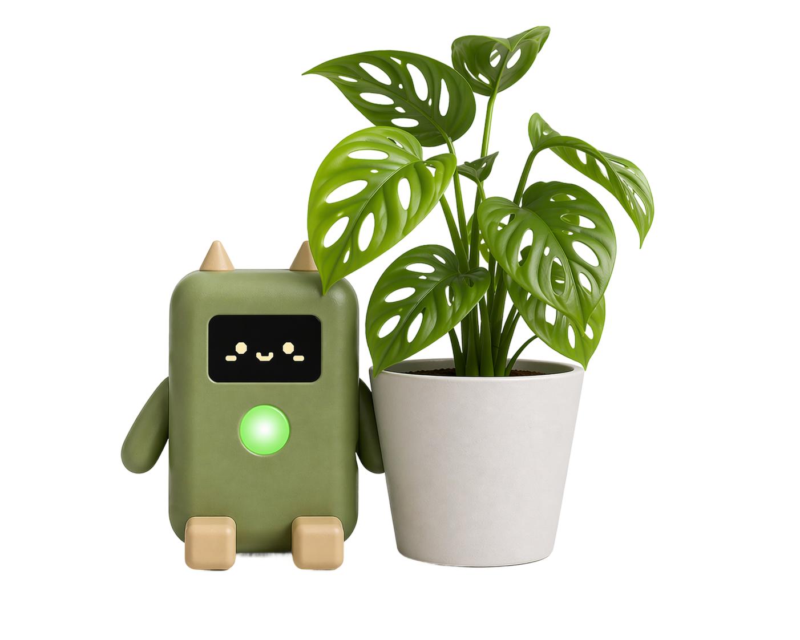
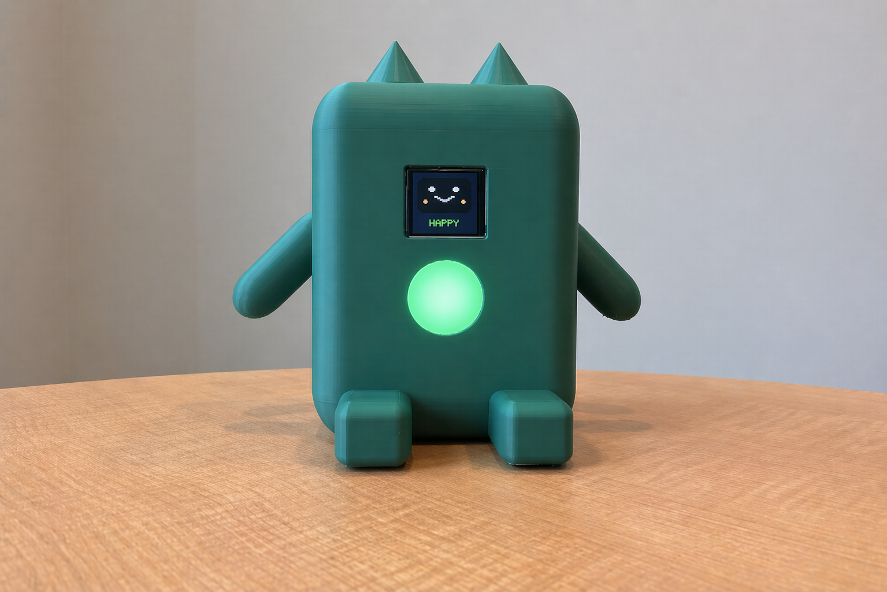
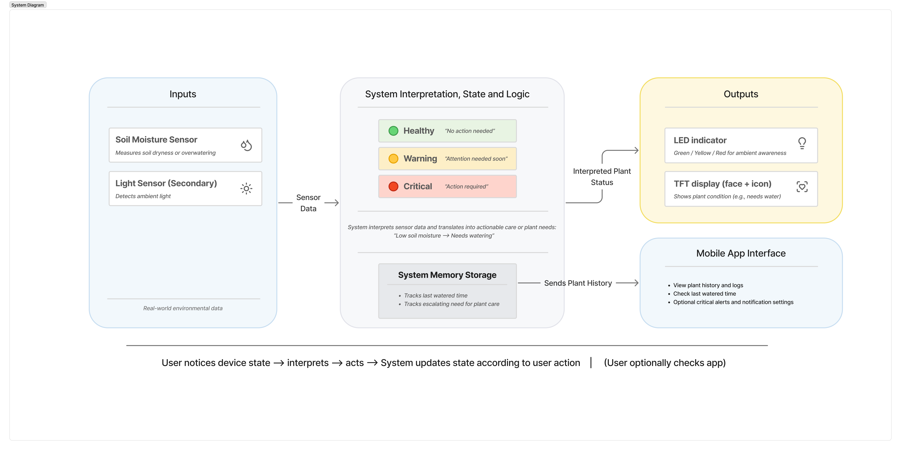

Pervasive Interaction Design · University of Michigan
An ambient plant care companion that helps plants thrive, without adding to your daily cognitive load.

Rootly combines a physical IoT device with a lightweight companion app to help users understand and respond to their plants' needs, at a glance, without interruption.
A NeoPixel LED ring reflects soil moisture through color. A TFT face display gives plants an expressive personality. Together they create a system that is ambient by default and escalates only when truly necessary.
The companion app provides plant profiles, care history, and actionable guidance on demand, never forcing itself into your day.
"Transforming everyday plant care into simple routines that help plants grow and people feel connected."

Our initial research surfaced a consistent pattern: people who want to care for their plants often fail not because of disinterest, but because plant needs are invisible until it's too late.
Unlike pets, plants give no audible cues. The result is a cycle of forgetting, guilt, and eventual plant loss. Contextual inquiries confirmed this directly, a graduate student forgot to water plants during exam weeks and felt guilty discovering dry soil. An older participant lost a plant to inconsistent watering during travel.
We identified four core design goals that shaped every decision:
Our formative research combined contextual inquiry, a designed cultural probe protocol, and a 30-response survey. Together they gave us directional confidence about who struggles with plant care, why, and what kind of system would actually help.
Two in-home observational sessions with plant owners established the foundational problem frame, invisible plant needs and unclear shared responsibility cause care failure, not indifference.
A one-week creative probe kit was deployed with 3 long-term plant owners, each with approximately 10 years of experience caring for houseplants. Activities included texture rubbings, prompt cards, abstract drawings, and timeline stickers to surface emotional relationships with plants and lived experiences of care uncertainty.
30 complete responses collected via Google Forms. Validated that forgetting, not coordination complexity, is the primary failure mode, pointing toward ambient glanceable cues over scheduled reminders.
64% of respondents live with others but bear plant care alone. Most shared-care households reported at least one instance of "we don't always know what has been done."
20 of 30 respondents cited forgetting; travel (17) and busy days (16) followed. Only 25% consistently stayed on a care schedule. This pointed toward ambient cues over scheduled notifications.
Open-ended responses consistently requested soil moisture sensors with threshold-based alerts. Fixed schedules generate false alarms and erode trust, especially for overwatering-sensitive plants.
Emotional responses to plants skewed positive (calm: 24, happy: 21), but missed care triggered anxiety (7), guilt (6), and relief when caught up (7). The system's tone must build confidence, not add guilt.
In an early prototyping stage we ran user enactments with 4 participants across 3 scenario contexts (morning routine, soil issue, travel) and 3 system proactiveness levels (low, medium, high), using Slack messages, colored phone screens, and printed cards as low-fi simulations.
Participants rarely acted immediately. They settled into routines before responding, or planned to act later. The system must support re-notification and delayed action, not assume immediate response.
Participants tried to diagnose before acting, searching online, considering multiple causes, asking what to do. A system that only signals a problem does not reduce decision effort.
One participant received ~40 notifications daily and ignored most. Others preferred setting reminders manually. This confirmed the ambient-first principle: the physical device carries the daily load.
Critically, the travel calendar handoff (auto-messaging a roommate) made participants uncomfortable. Even helpful automation was difficult to trust. Rootly augments human decision-making; it does not replace it.
Users do not want to be interrupted unless the situation is genuinely critical.
Users want help understanding what the plant needs, not just signals that something is wrong.
Users prefer to care for plants on their own terms and within their existing daily patterns.
Users want to remain in control rather than hand plant-care decisions over to the system.
Users value ambient feedback that fits naturally into everyday life without demanding attention.
Users experience uncertainty and sometimes anxiety around care, especially when unsure what action is needed.
Users respond better to systems that support awareness and confidence than to systems that feel demanding or intrusive. The system should feel like a trusted companion, not a surveillance tool.
Rootly is an ambient plant care companion consisting of a physical IoT device and a mobile app, connected through Particle Cloud. The design principle is simple: the physical device communicates plant status continuously and passively. The app provides deeper context when needed. Notifications escalate only when it is urgent.
A NeoPixel LED ring continuously reflects soil moisture, green when healthy, shifting to amber and red as the plant dries. No interaction required. Always glanceable as users move through their home.
A TFT display gives the plant a simple emotional expression, happy, neutral, thirsty, that translates abstract sensor data into something immediately readable. The face creates emotional connection that motivates care.
The Rootly mobile app lets users view plant profiles, log care activity, and mark a plant as watered. It surfaces care history and plant-specific tips so users build understanding over time, not just react to crises.
A phone notification appears only when a plant's condition has become urgent and has gone unaddressed for an extended period. The system never sends automated messages to household members or accesses calendars.
The video follows Avery, a sole plant caregiver in a shared home, through a realistic morning routine. It demonstrates all four key features in a narrative context that shows the emotional core of Rootly: the moment of reconnection between a person and their plant after a busy day.
Video to be embedded at this URL once final production is complete. Replace the placeholder above with a YouTube or Vimeo embed.
The high-fidelity prototype demonstrated the core interaction loop using a Particle Photon 2 microcontroller. Plant state was simulated manually via the Particle app, allowing the team to trigger state changes in sync with live demo narration. A capacitive soil sensor was tested but dropped since it could not reliably pick up moisture values, getting stuck at a single reading.
NeoPixel LED ring with green, blue, and yellow ambient gradient, shifting to red when critically dry and in direct sunlight. TFT display rendering happy, neutral, and thirsty expressions. State transitions triggered through Particle Cloud logic.
Soil moisture sensor values (manually set). Time-based condition progression (warning → critical). Long-term plant history, real-time data sync between the physical device and the companion mobile app.
The high-fidelity prototype demonstrates the core interaction experience but relies on manual simulation for sensor input. A fully realized Rootly system would close these gaps in two phases.
The soil sensor was dropped from the final build due to instability, the demo relies on manual state simulation. The companion app is a Figma prototype, not a functional application.
Sample sizes were modest throughout the project: 2 contextual inquiry participants, 30 survey respondents, 3 cultural probe participants, and 4 user enactment participants. The cultural probe was deployed with 3 participants.
Stabilizing the soil sensor and validating the full sensing-to-feedback loop on real hardware is the most critical next step. From there, building a lightweight backend to connect Particle Cloud to the mobile app enables the end-to-end notification path.
The household coordination feature deserves dedicated research, a user-initiated sharing feature was never tested. That's a design space worth a dedicated enactment round.
Building the physical prototype surfaced something research alone didn't: the face display creates a qualitatively different experience than the LED ring alone. During testing, the face display created a noticeably positive response than the LED ring alone.
The video script pushed us to think more carefully about what the experience actually feels like from a user's perspective.
If the next project phase focused on accessibility, two user groups would encounter significant barriers with the current Rootly design. Here's an honest assessment and a concrete path forward.
Introduce pulsing patterns or brightness levels on the LED ring that communicate status independent of color, e.g., steady glow for healthy, slow pulse for warning, fast pulse for critical.
Add a gentle tone or spoken status when a user approaches or touches the device, triggered by the proximity sensor already proposed in the system architecture.
Audit and redesign the app for screen reader compatibility, including semantic labeling of all status indicators and care action buttons.
Add haptic feedback on the app for care confirmations and urgent alerts, expanding the audience without compromising the ambient-first design principle.
